Your child plays, builds and learns with a group of children who are becoming their friends. You are twenty steps away — working, watching, or joining in.
Not sitting in a car park at three o'clock, wondering how the day went.
Ages 3 to 7 · Open 8am to 8pm, six days a week · Founding group of 10 to 20 children
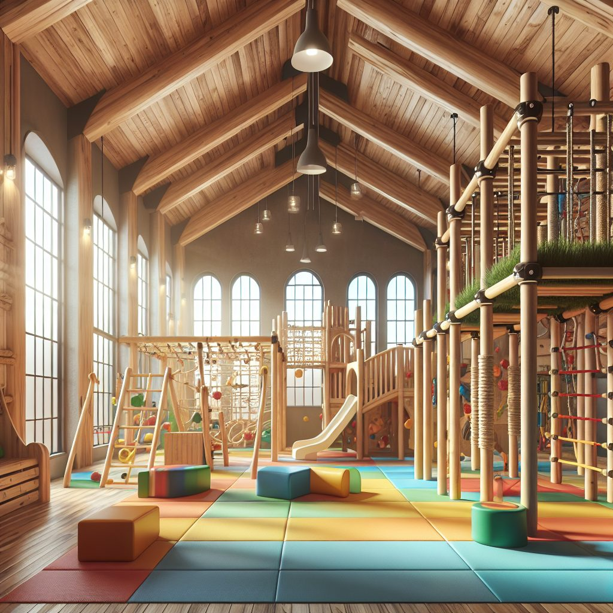
You do not know what was said to them. You do not know who sat beside them, whether they ate anything, or whether anyone noticed they were quiet all morning. You ask what they did today and you get "nothing".
You are not allowed in. That is the arrangement. You are the parent, and for six hours a day, five days a week, for eleven years, you are a visitor who needs an appointment.
Plenty of parents look at that and think about home education instead. Then they picture it — one child at the kitchen table, no friends to build things with, one parent trying to be teacher, cook and company all at once. And they put the thought away.
So most families choose the arrangement they do not really like, because the other one looks lonely.
There is a third thing.
Most parents we speak to now work on a laptop. The office is wherever they open it. Which makes the old question a strange one: if you can work anywhere, why are you handing your child to somebody you have never met for the best six hours of their day?
So there is a work zone for parents here. Quiet, warm, good light, good coffee, proper internet. Your child is in the barn with a dozen other children, building something loud.
If they want you, they walk twenty steps and you are there. If they do not want you, they do not come — and that is the point of it. Children stretch further when they know the safe person is close by.
Close enough to be found. Far enough to get your work done. And you decide what your child does with their day, because you are standing in the building where it happens.
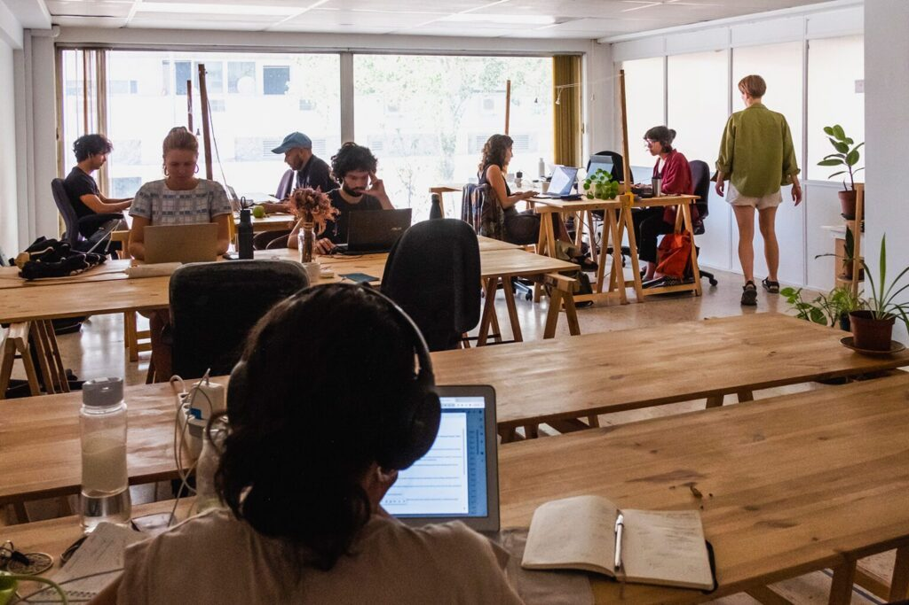
Four spaces, each doing one job properly. A child moves between them as their day needs — loud to quiet, group to alone, inside to outside and back.
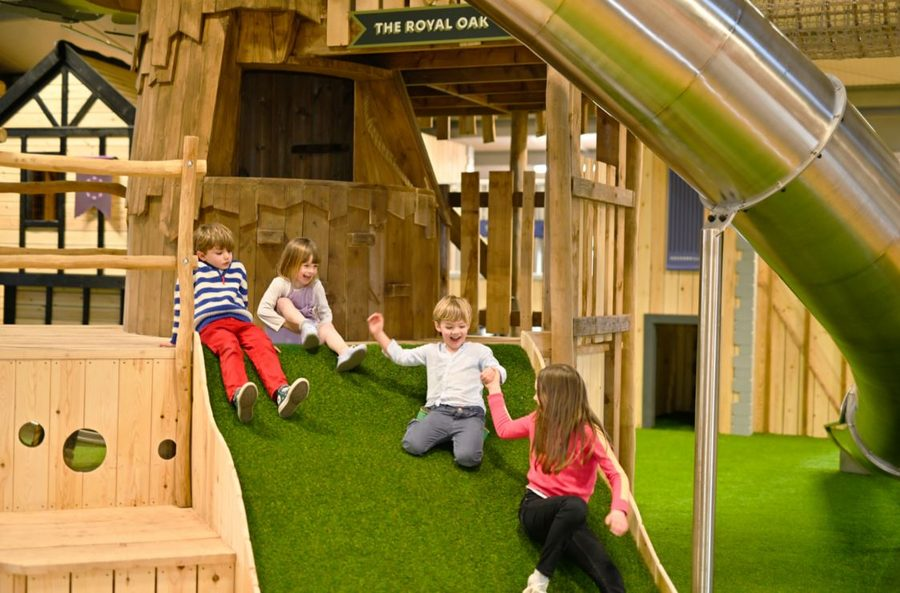
High ceilings, soft floors, and the kind of climbing, swinging and sliding you would drive an hour to find — indoors. Under seven, a child learns through their body before anything else. So the body comes first.
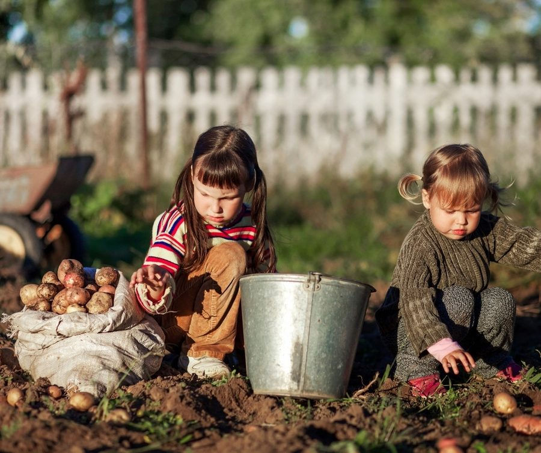
Beds to dig, ground to run on, weather to be in. On any day that allows it, hours outside — not fifteen minutes of supervised break at a fixed time.
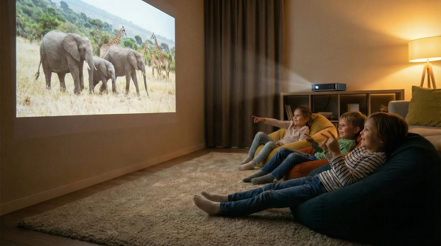
Beanbags, low light, books, and a projector on the wall for something worth watching together. For the child who has had enough noise — and for the afternoon when everyone has.
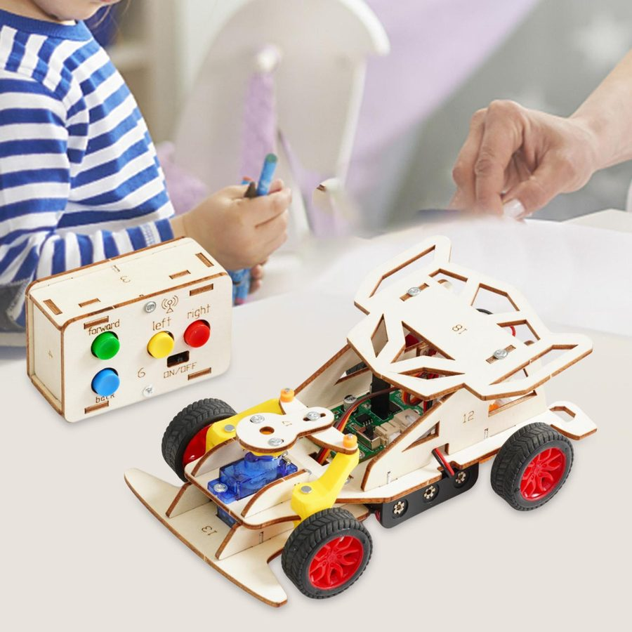
Big tables for building together. Small desks for the child who wants to work alone for an hour. Real tools, not toy versions of real tools.
Can. Not must. No two families use the same shape of week, and that is deliberate — the timetable bends around your life instead of the other way round.
A child starting now will spend their working life alongside tools that recall everything instantly. Being a slower version of that is not a skill. So we train the things that stay valuable: figuring it out, getting on with people, and finishing what you started.
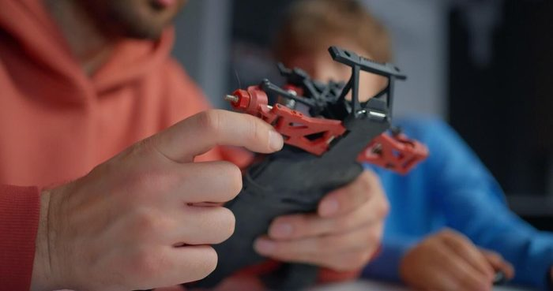
"Build a remote control car. Now make it get all the way round a loop." Nobody hands them the method. They try, it fails, they change it, it works. That feeling is the lesson — the car is just the excuse for it.
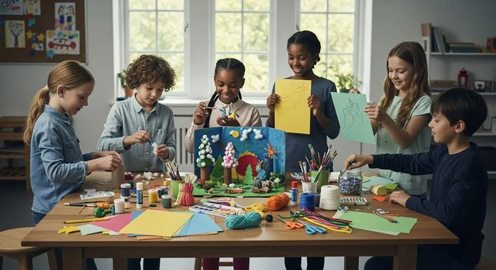
In most classrooms that is called cheating. Here it is called working. No adult is ever asked to solve a real problem alone with no help and no resources, so we stop pretending childhood should work that way.
Academic work — reading, maths, languages — happens on e-ink tablets. Paper-like, no backlight, no glow. A couple of hours a day at most, and the rest of the day is hands, bodies and people.
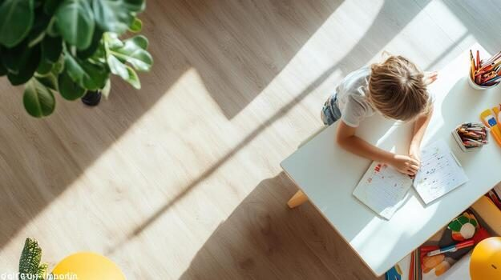
We use AI tools to build and rebuild the programme around the children actually in the room — where each one is, what they want next, what they need next. Not a national plan written for an average child who does not exist.
Two minutes. Then we talk.
Reading and numbers come. They always come. These are the things that are much harder to add later, so they get the attention first.
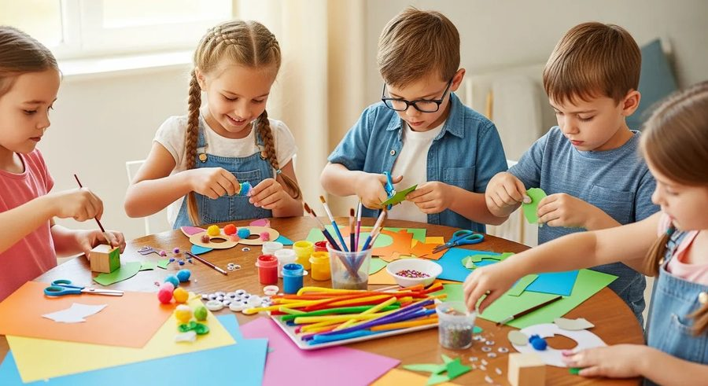
Mixed ages, small groups, shared jobs, and adults nearby who model how disagreements actually get settled. A child who can work with anybody has an advantage that never stops paying.
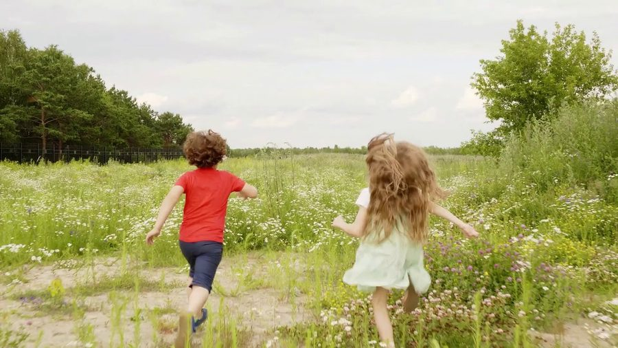
Not praise for existing. Confidence that comes from having done difficult things in front of other people and survived it — climbed the high one, led the session, spoke up, made the thing work.
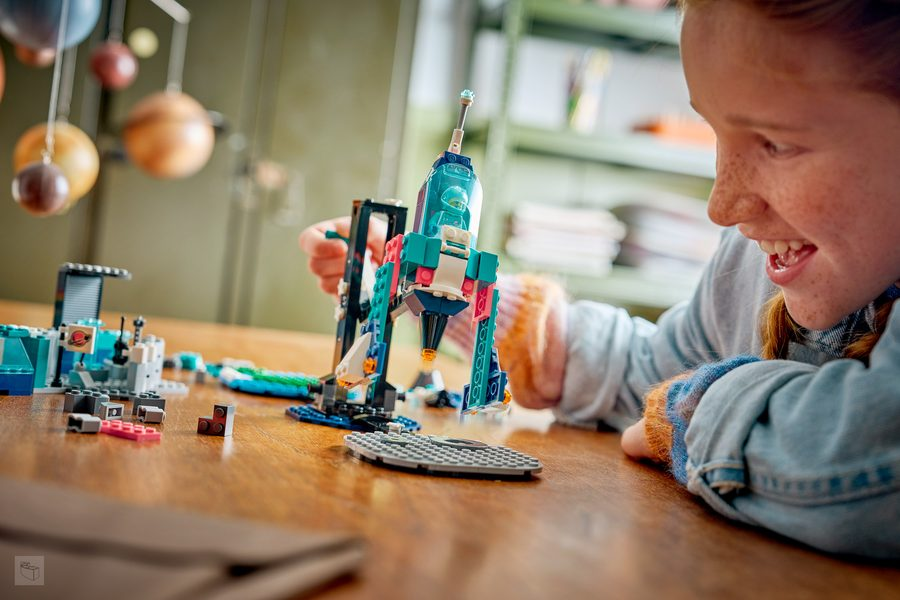
Given a goal and no method, most children freeze at first. Within weeks they stop freezing. That switch — from "tell me what to do" to "I will find a way" — is the single most useful thing we can hand them.
Nobody here is minding your child for an hourly rate. The adults in the building are parents who want to be in it, and specialists we bring in for the things parents cannot do — music and rhythm, art, movement, whatever the group is hungry for that month.
If you are good at something, you can lead a session. If you would rather keep your head down and work, that is completely fine too, and nobody will make it a thing.
What everyone shares is the tone: calm, friendly, no shouting, no sarcasm, no competing about whose child can read. Peaceful is not a nice extra here — it is the entry requirement.
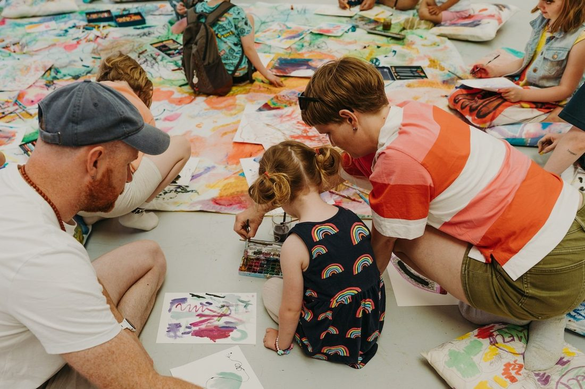
Highly processed food, artificial colours, sweeteners and additives are not permitted in the building. Not discouraged — not permitted.
Partly because of what it does to a young body. Mostly because of what it does to a room of young children twenty minutes later, and to the child who then gets told off for something the food did.
Children help make the lunch. Children who cook are children who eat, and a child who has chopped a carrot has a different relationship with the carrot.
A small group only works if the families in it want the same things. So here is the filter, plainly, before you spend two minutes on an application.
No pressure to commit to anything before you have walked in, met the families, and watched your child in the room.
We are not opening on a date. We open when the right group of families is together — between ten and twenty children whose parents want the same things for them. That is not a marketing line, it is the actual condition.
Before any of that, we hold open days: a proper fun day out where the families on the list meet each other, the children play together, and everybody quietly works out whether this feels right. No pressure, no obligation, nothing to sign.
The list is how you get invited. Applications are read, not counted. Tell us who you are and we will tell you when the next one is.
Two minutes now. The full application comes after.
No, and we are not pretending otherwise. Children here are home-educated. In Northern Ireland parents have the right to educate their child outside a registered school, and the legal responsibility for that education stays with the parent. What we provide is the place, the group, the equipment, the programme and the other families. We will walk you through what electing home education actually involves — for most families it is far less complicated than they expect.
You are. It works the way a park or a soft play works — your child, your responsibility, and you are in the building. You may hand that over to another adult you personally trust, another parent, a grandparent, a childminder, and that arrangement is yours to make. We do not take custody of your child. That is not a loophole, it is the design: the whole point is that you are there.
No. Come for three hours. Come for ten. Three long days and four days at home. Two mornings a week. The doors are open 8am to 8pm, six days, and you use the part of it that fits your life. That flexibility is one of the main reasons the place exists — most provision runs nine to two and expects your job to arrange itself around that.
It is a paid programme, billed monthly. Founding families hold the lowest rate for as long as they stay. We share the figure with families we invite forward, rather than putting it on a page, because we would rather you decide first whether this is the right place for your child. If it is, the number is straightforward. If it is not, the number was never the deciding thing.
Behind what, is the honest question back. Under seven, the research is not subtle: play, movement, language and secure attachment do more for later academic ability than early formal instruction does. Reading and number work happen here, at each child's pace, on e-ink tablets and with an adult beside them. What we will not do is push a four-year-old through a worksheet to hit a date on a national timetable.
Academic work happens on e-ink tablets — the paper-like kind with no backlight and no glow — for a couple of hours a day at most. Films and educational material go on a projector, watched together, in a quiet room. What you will not find is a bank of glowing tablets keeping children occupied.
None of those. We borrow from anything that works — Montessori has real insight about practical work, Waldorf about rhythm and materials, classical education about character — but nothing is adopted because a tradition says so. Every practice here has to survive the question "why are we actually doing this?" Families of any faith or none are welcome, and no child is taught that one worldview is settled fact.
Apply anyway and tell us their age. The founding group is 3 to 7 because that is where the play-first model is strongest, but the provision grows upward with the children in it — and the mix of ages in a group is a strength, not a problem to be managed.
When the founding group is full. We would rather tell you that than invent a date we cannot control. Applications are literally what makes it happen — a premises gets secured when there are enough families ready to walk into it. In the meantime you get invited to the open days, so nobody is waiting in silence.
You fill in two minutes of details. If it looks like a fit, we send you the longer application — the one about what you want for your child and how you like to do things — and an invitation to the next open day. You meet the other families, the children play together, and you decide from there. Nothing is signed before any of that.
Two minutes now. If it looks like a fit, we send you the full application and an invitation to the next open day — the one where you meet everybody and see how your child takes to the room.